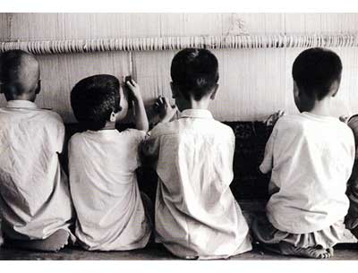

[Cadı Kazanı] İqbal’in Gözleri…
Ne yazık ki çalıştığım yerin sahibi, çocukları köle gibi çalıştırmalarını Amerika’nın istediğini söylemişti bize. Amerikalılar’ın bizim ürettiğimiz halı, kilim ve havluları ucuza almak istediğini söylemişti. Ve köle işçiliğin sürmesini istediklerini. Sizden, çocukların köle olarak çalıştırılmasına son vermenizi istiyorum, çünkü çocuklar kalem kullanmalı, işçilerin kullandığı aletleri değil. – İqbal Masih
 İqbal’in adını duyduğumda sanırım 11 yaşındaydım. İskenderun’da yerel gazetede küçücük bir haberdi. 10 yaşında çocuk işçilerin özgürlüğü için savaşan masih’i ve aldığı ödülleri okuyup siyah beyaz resmine baktığım anda zamanın, mesafelerin ötesinde bir arkadaşlık başladı sanki. O benden bile küçüktü ve kimse adını duymamıştı. Bense onu hiç unutamadım hatta “Burcu’nun Pakistanlı platonik aşkı İftar (adını bile öğrenemedi kimse) olarak arkadaşlarım bile ezberlemişti. 15 yaşımdayken ölüm haberini öğrendiğimde günlerce koca adam gibi yemeyi içmeyi kestim.
İqbal’in adını duyduğumda sanırım 11 yaşındaydım. İskenderun’da yerel gazetede küçücük bir haberdi. 10 yaşında çocuk işçilerin özgürlüğü için savaşan masih’i ve aldığı ödülleri okuyup siyah beyaz resmine baktığım anda zamanın, mesafelerin ötesinde bir arkadaşlık başladı sanki. O benden bile küçüktü ve kimse adını duymamıştı. Bense onu hiç unutamadım hatta “Burcu’nun Pakistanlı platonik aşkı İftar (adını bile öğrenemedi kimse) olarak arkadaşlarım bile ezberlemişti. 15 yaşımdayken ölüm haberini öğrendiğimde günlerce koca adam gibi yemeyi içmeyi kestim.
Dramlar kraliçesi bir haspa gibi yataklara düştüm. Bizimkiler bu halimden bezip: â€Åeker portakalında ağacı kesilen aptal çocuk gibi hayata mı küseceksin bu yaşta? Sana ne elin Pakistan’lı çocuğundan. Bir sen biliyosun zaten adını!†diye bana öfkelendiler. Kimselere dünya nasıl bir insan kaybetti anlatamıyordum. 15 yaşında kendini ifade etme konusunda çok muhteşem sayılmazdım. Laflar ağzımın içerisinde zor yutulan bir yemek gibi birbirine karışıyor, anlatmak istedikçe daha da tetenek oluyordum. Kimse dinlemek istemiyordu çünkü ben daha küçüktüm, İqbal de küçüktü zaten… Büyüklerin zor değiştirdiği şu dünyada küçük çocuklar neyi değiştirebilirdi ki?
İqbal 1982 yılında Pakistan’ın dışındaki küçük bir köy olan Muridke’de doğdu. Babaları kısa süre sonra aileyi terkettiğinde annesi evlere temizliğe giderek bir süre idare etti. Henüz ailesinin yaşadığı sorunlardan bihaber olan İqbal zamanını tarlalarda koşup oynayarak geçiriyordu. Abisinin evlenme zamanı geldiğinde gerekli olan 600 rupiyi bulabilmek için annesi 4 yaşındaki İqbal’i bir halı fabrikasında çalışmaya gönderdi. Daha doğrusu halı fabrikasıunın sahibi Huseyin Arshad ‘dan 600 rupi (12 dolar) alıp İqbal’i Arshad’a sattı.
Pakistan dünyada en çok çocuk işçi çalıştıran ülkelerden biri. Kölelikten hiçbir farkı olmayan bu sistemde halı mafyası önce çaresiz aileyi bitmez bir borç batağına sürüklüyor ve daha sonra her yıl artan faizler borcun ödenmesini engelliyordu. İqbal ve daha pek çok çaresiz çocuk bu şekilde aşırı sıcak, havasız bir odada (dokudukları halının kalitesi düşmesin diye), bir halı tezgahına zincirlenerek (kaçmasınlar diye) günde 12 saatten fazla çalıştırılıyordu. Çevresinde kendisi gibi konuşmaya bile korkan 30 çocukla bir tutsak olarak 6 sene yaşadı. Çocukların hemen hepsine sadece hayatta kalmalarına yetecek kadar su ve yemek veriliyordu, tabii bunun da bir sebebi var: Onları mümkün olduğu sürece küçük tutabilmek… Çünkü en pahalı halıları ancak o küçücük parmaklar dokuyabiliyordu. Cezaların çok ağır olduğu bu kölelik sistemine İqbal daha bebek sayılacak yaşta girmesine rağmen 6 yaşına bastığında isyan etmeye ve çocukların bakıcılarına kök söktürmeye başlamıştı bile. Kötü beslenme şartları ve ikibüklüm saatlerce oturmanın sonunda İqbal bir türlü gelişemedi. 10 yaşındayken hala 5 yaşında bir çocuğun kilosuna ve boyuna sahipti. Omurgası yamulmuştu ve ömrünün sonuna kadar böbrek sorunlarıyla mücadele edecekti. 6 yıl boyunca tutsak bir halde yaşam mücadelesi veren İqbal bir gün kasabada Bonded Labor Liberation Front (BLLF) adlı aktivist bir grubun toplantısı olduğunu duydu. Aldığı büyük riske rağmen o gün sonunda bir şekilde diğer çocukların da yardımıyla ve onlara geri döneceğine dair söz vererek BLLF’in toplantısına gitmek üzere yeraltındaki köhne fabrikadan kaçtı. Orada 10 yaşındaki İqbal Pakistan devleti tarafından peshgi’nin (bir çeşit tefecilik borcu) yasadışı ilan edildiğini öğrendi. Derneğin lideriyle konuşup yardımını isteyen İqbal kısa sürede onu köle taciri patronlarının elinden kurtaracak gerekli evrakları hazırladı. Evraklarını fabrika sahibine bizzat elden verme konusunda ısrar etti çünkü orada arkadaşlarına seslenebilecekti: “Korkmayın. Herşeyi öğrendim. Benimle gelin. Sizler özgürsünüz.“ Fabrikaya geri dönüp evrakları adama verdiğinde patron öfkesinden kendini kaybetse de hiçbir şey yapamadı ve masih diğer çocukları da peşine takarak ilk gününde kendisiyle beraber 34 çocuğu özgürlüğüne kavuşturdu.
Okuma yazma öğrenmek ve eğitim almak için Bllf ‘in burslu okullarından birine başlayan İqbal’in konuşma yeteneği ve liderlik gücü çok kısa sürede farkedildi. 5 yaşında bir çocuğun narinliğindeki o küçük bedeniyle elinde bayrak sokaklara dökülen İqbal kocaman adamların bile korktuğu koskoca halı mafyasına kafa tutmaya kararlıydı. Sadece Pakistan’da değil tüm dünyadaki her bir çocuk özgür olmadıkça durmayacağını açık bir şekilde belirtti. Bu kısacık sürede o kadar çok şey başardı ki… Bir grup çocuğu kurtarabilmek için işçi/köle olarak hayatını riske atıp dokuma fabrikalarından birine sızmayı bile başardı. Bir kez içeri girdikten sonra o küçücük bedeni ve ince sesiyle çocukların gözcüleri ondan şüphelenmiyordu. Sonrasında İqbal gözcülerin bir anlık dalgınlığından faydalanıp çocukların kulağına fısıldıyordu: “Korkmayın siz özgür doğdunuz. Kimsenin sizi burada tutmaya hakkı yok. Benimle gelin. BENİMLE GELİN.†İqbal kendi çocuksu ama riskli planlarıyla tek seferde 100’den fazla çocuğu özgürlüğüne kavuşturduktan sonra nihayet dünyanın dikkatini çeker. Çeşitli aktivistlerle ve gazetecilerle konuşan Masih kalabalıklardan korkmadan yüzlerce kişinin önünde güçlü konuşmalar yapabilen küçücük bir hatipti. Reebok insan hakları ödülünü kazandığında konuşma yapmak için Amerika’ya giden İqbal hayatı boyunca yaşayamadığı çocukluğunu kısa bir süre için orada yaşadı. Favorisi Bugs Bunny çizgifilmleriydi. İsviçre ve Amerika’da bir çok okulda konuşma yapan İqbal farkında olmadan başka çocukların da hayatını değiştiriyordu. İqbal’in hayali çocuk tacirlerinden kurtulan küçüklerin sığınıp eğitim alabileceği bir okul ve yurt yaptırmaktı. Reebok’tan kazandığı 15.000 doları da bu amaç için biriktirdi. “Avukat olmak istiyorum. Henüz kendini savunamayacak kadar küçük olan, seslerini çıkartmaya bile korkan dostlarımın haklarını savunmak istiyorum.†diyordu.
Ne yazık ki sevenleri İqbal’i tanımaya ve ismini öğrenmeye başladıkça halı mafyası ve tefeciler de onun yüzünü ezberlediler. “İşte ortalığı karıştıran, bizi onca paradan eden başbelası çocuk.†diye hem kendileri hem akrabaları İqbal’e ve derneğe tehdit yağmurları yağdırmaya başladılar. Pakistan’ın önemli ekonomik güçlerinden biri olan hatta seçim sonuçlarını bile etkileyebilen kocaman (!) halı mafyası küçücük İqbal’den korkar olmuştu, o da bunun farkındaydı. “Åimdi işler değişti. Eskiden ben patronlarımdan korkuyordum. Şimdi onlar benden korkuyor.†diye gülüyordu. Pek çok insanı dinlemeyip aktivizm hayatına kaldığı yerden devam etmek için 95’te tekrar Pakistan’a döndü. Amerika’da arkadaşlarına söylediği son söz “Başladığım işi bitireceğim.†di. 16 Nisan günü ailesini ziyarete gittiği köyünde kuzenleriyle bisikletle gezerken (koruma falan hak getire) üzerine ateş açılarak öldürüldü. 12 yaşındayken 6 yaşında bir çocuğun bedenine sahip küçücük İqbal onları o kadar korkutmuştu ki öldüğünden emin olmak için katil tüm şarjörü üzerine boşalttı. Anlatılan hikaye çok ilginç. Sözümona İqbal ve kuzeni köyden bir adamı eÅŸÅŸekle uygunsuz bir pozda yakalamış ve paniğe kapılan adam İqbal’i öldürmüştü. Fakat İqbal’in yanındaki aynı olaya şahit olan iki kuzeninden sadece biri kolundan tek kurşunla yaralandı.rado jubile replica watches
Şahitler ve köy sakinleri korkutularak sindirildi. Tüm köy susturuldu. BLLF’nin başkanı İqbal’in halı mafyası tarafından düzenlenen bir suikaste kurban gittiğini herkese anlatmaya çalışsa da polis kısa sürede olayı örtbas etti ve çocuk işçi çalıştıran halı tacirleri rahat bir nefes aldılar. Fakat ufak bir ayrıntıyı unutmuşlardı İqbal’in kısa sürelik hayatında dokunduğu diğer çocukları… Bu çocukların en önemlisi Craig Kielburger. Kendisi İqbal’le aynı yaşta ama çok farklı şartlarda dünyaya gelmiş ve bugün “Free The Children†derneğinin kurucusu olarak biliniyor. Kanada’da refah içinde bir hayat yaşarken İqbal’in ölümüyle tüm dünyası değişen Craig neredeyse tüm hayatını İqbal gibi çocuklara adamaya karar verdi. Ölüm haberini yazan makaleyi okula götürüp 11 arkadaşıyla küçük bir grup kurdu. 12 dolara satılan ve 12 yaşında öldürülen İqbal’in anısına grubun adı çocuksu bir şekilde “12 tane 12 yaşında çocuk†tu. Yine İsviçre’de ve Amerika’da İqbal’in ziyaret ettiği okullarda tanıştığı pek çok çocuk ulaşabildikleri herkesten 12 dolar isteyerek Masih’in hayali olan okulun kurulması için gereken parayı toplamaya başladılar. Bugün Craig 30 yaşında ve dünyanın 45 ülkesinde 650’den fazla okulun kurulmasını sağladı. Çocuk işçilerin şartlarını kendi gözüyle görmek için gittiği BangladeÅŸ’te ülkesinin başbakanını öyle bir tuzağa düşürdü ki adam konuyu dile getirip Bangladeş otorilerini eleştirmek zorunda kaldı. Bu arada unutmadan Susan Kuklin’in İqbal hakkında yazdığı kitap “İkbal Mesih ve çocuk köleliğine karşı savaşanlar†adıyla türkçeye çevrildi.
İqbal bence dağ gibi omuzlu, savaşçı, naracı, pek çok büyük abi’den daha büyük bir kahraman. Ölümünü öğrendiğimde 14 yaşımdaydım ve sanki benim de bir yerim o İkbal’in gelişemeyen, büyüyemeyen vücudu gibi küçük kaldı. Belki İqbal’le arkadaşlık edebilmek, onu daha iyi duyabilmek için bilemiyorum ama off… işte… Kendisi olur olmadık zamanlarda cam kesiği gibi gelir beynimin kıvrımlarına oturur. “yaz beni. herkese anlat beni†diye ucuz plastik terlikleriyle çevremde zıplar.
Tarih kitaplarından, ordan burdan herkes bize kimlerin kahraman olduğunu anlatıp durur. Beynimize kazırlar. Bizler de çoğu zaman sınav korkularıyla bu adamları hatmeder, kahraman diye belleriz. Ama sahi kahramanlık nedir? Cüssede mi gizlidir yoksa ruhta mı? Artık kendi kahramanlarımızı seçme zamanımız geldi. Kahraman dedin mi bin çeşidi var: Evinde oturup şiir yazarken Grana’da da bir gün sürüklenerek tek kurşunla infaz edileni, haksızlıklara öfkelenip elde silah kırlara çıkarak ütopyaların peşinde koşarken genç yaşta darağacıyla tanışanı, barışçıl direniş diye bir yöntemle koca bir ırkın kaderini değiştirip tek bir kurşunla yok olanı… Neler neler.. İqbal kahramanınız olur mu bilmem bunca söylediğim şeyden sonra, ben de sizi manipüle etmeye çalışsam bir miktar ayıp olur. Fakat bu dünyada İqbal Masih adında bir çocuğun yaşadığını, koca koca adamların baş edemediği sorunlarla 10 yaşında savaştığını, binlerce çocuğu tutsak bir ömürden kurtardığını ve inandığı değerler uğruna korkmadan öldüğünü bilin yeter. “İqbal adında bir çocuk bu dünyadan geçti.†deyin yeter. Bugün insanlar “Pinochet bir kahramandır.†diye sokaklarda yürüyor. Kimisi seri katillerin halk kahramanı olduğunu düşünüp adamların yaptıkları suluboya resimlere binlerce dolar para harcıyorlar. Herkes sizlere ne düşünmeniz gerektiğini söyleyip duruyor. Hepimizin hayatı zor ve keşmekeş. Biliyorum bazen nefes almak bile zor. Eğer gücünüzün azaldığını, herşeyden bezdiğinizi hissederseniz suyun altından çıkıp derin bir nefes alın ve İqbal’in gözlerine uzun uzun bakın. Videolarındaki gülüşünü seyredin, gözlerindeki kararlılığı görün. Bizde yalan yok abiler ablalar! 10 haftalık hardcore Cihangir Yoga seansından iyi gelecek emin olun efendim. Benim görevim onu insanlara hatırlatmak. İngilizce, türkçe, olmayan japoncamla japonca, ne kadar dil varsa İqbal’i her miletten insana tanıtmak benim kendime biçtiğim bir misyon. Haberleri seyredip o nursuz suratları gördükçe mideniz bulandığında İqbal’i hatırlayıp “sonuçta o da öldü işte.†deyip pes etmeden hayatı onun cesaretiyle avuçlarınızda çevirmek… Önü kapkara gözükse de, alnınıza kazınmış gibi güzükse de kader denen kahpe hipoteze çalım atmaktan korkmamak…cheap fake michael kors watches uku boat replica watch review


{kind=link}
{kind=link}
sevgili burcu,
iqbal’i hiç unutmayacağım…
sevgiler
bilge
İqbal’i tanıdım sayende. Umarım çevremdekilere de elimden geldigince tanıtırım onu. Hepimizin tanıması gereken kahramanlardan biri o çünkü. Bizim Momo’muz.
Ellerine sağlık
sevgiler
Kıvılcım
iqbal gibi nice insan elle gösterilecek kadar az ve ve dışındalar bütün gündemlerin.Çünkü ne zaman yüzümüze gerçekleri vursa birisi biz ona kızarız biz onu lanetleriz.Çünkü ne öğretilmişse onu sayıklar neresi gösterilmişse orada uyuruz.Ne verilirse onu yeriz.Bu mekanik düzenekte ruhlarımızı kaybettiğimiz için -kendi acılarımızı hissedemiyorken-hiç kimseyi anlamak istemeyiz.Çünkü vicdan ağır bir yüktür,onunla yüzleşmemek için kaçtığımız kendimizden başkası da değildir.Biz aslında insanlığımızdan kaçarız.Hiç kurumayan bir yaraya vurdu kelimelerin,kanıyorum ama inan hiç şikayetçi değilim.Sadece küçücük bir çocuk kalmak isterdim şu hayatta..Eğer bize büyümeyi,büyük olmayı öğretmeyi bu kadar çok istemeselerdi.Şimdi elimden kelimelerin birbiri içinde kaybolduğu bu güzel yazıyı paylaşmaktan başka bir şey gelmiyor.Ama hep daha fazlası için hazır olacak, siz ve size benzeyen insanlardan güç almaya devam edeceğim.Umarım dünyadaki bütün kıtalar bir gün çocukların elele tutuşabileceği kadar birbirine yaklaşırlar.
Erdem
iqbal..
adını hiç unutmayacağım..
yüreğimde açtığı boşluğu da.
biz çocukları koruyamadık bu dünyada.
onlar bu savaşı kendileri veriyorlar.
iqbal unutulmayacak.fakat o tefecileri o zalimleri tarih yerle bir edecek.
ama önce korunması gereken çok iqbal var.
Siz 14 yaşında bu farkindaliktayken ben liseden mezun oluyordum. Hiçbir fikrim yoktu. Sayenizde öğrendim. Müthiş bir hikayesi olan bir çocuk ve ciddi bir farkindaligi olan siz…. Teşekkürler. ..
Teşekkürler 30 yaşındayım bugün tesadüfen bir sitede gördüm arama motorunda da aradım ve senin sayfana yönlendiren bir site çıktı. yazıyı beğendim. Tüm dünya çocuklarının çocukluğunu yaşamaları dileğiyle. Saygılar.
Cesaret cussede değil,ruh tadır.ruhun şad olsun İkbal…mukaddes bir emanet bıraktın insanlık adına
Köle çocukları okurken 5 yaşındaki oğlum geldi durdu aklıma. Çok müteessirim. Biraz daha anlayabileceği bir yaşta Iqbal’i anlatacağım oğluma da.
Sana nasıl teşekkür etmeli bilemiyorum aslında buraya neden yazma gereği duyduğumu da bilmiyorum hayat hikayesinin filmini izlediğimde henüz okula bile gitmiyordum ancak adı aklımda ikbalu olarak kalmış ara ara aklıma gelirdi ancak hiç bir zaman ulaşamadım ta ki bugüne kadar teşekkür ederim
Çok güzel bir yazi olmuÅŸ…
Ahhh iqbal. Helal olsun… Bizler senin %10 un kadar olabilseydik dünya böyle bir yer olmazdı…
Yalnız arkadaşlar iqbalin hayatını anlatan filmin adı nedir, bulamadım ismini.
merhaba 🙂
bugün bir anda aklıma düştü benim de ikbal. yıllar önce hayatını anlatan bi film izlemiştim, ikbalin hayatını izleyip etkilendiğimde 10 yaşında bile değildim sanırım. şimdi filmden resim bile bulamıyorum doğru dürüst. böyle bir kahramanın bu kadar az bilinmesi içimi acıtıyor. bu yüzden seni tebrik etmek, teşekkür etmek istedim.
ikbal seninle, benimle, yüreğine dokunduğu çocuklarla birlikte yaşıyor.
ikbalın filmini nerede bulabiliriz
mailime bigli dönebilirmsiniz.
İqbal’i unutmayacağım,seni de.
Sevgiler ve teşekkürler.
Çocuğun gözleri o kadar buğulu bakıyor ki içim burkuldu yaşantıda o kadar kolay değilmiş daha yazamadığın veya bizim bile bilmediğimiz acıları olmuştur ki
Merhaba,
Çok teşekkürler, lqbal’i ve öyküsünü biliyordum ama sizin kaleminizden okumak harikaydı..
Çocuk işçiliğinin ve emek sömürüsünun ortadan kalktığı bir dünya umudu ve sevgi ile..
Dilek